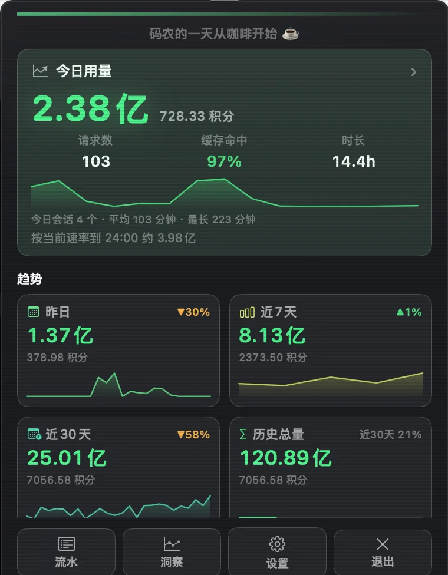
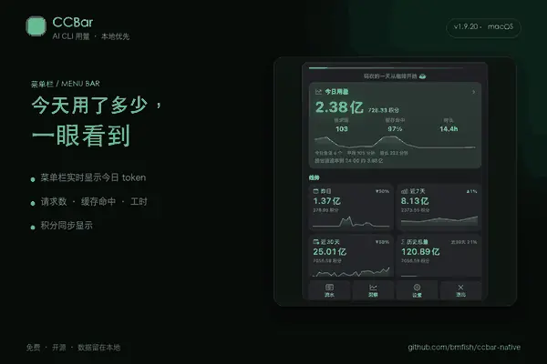
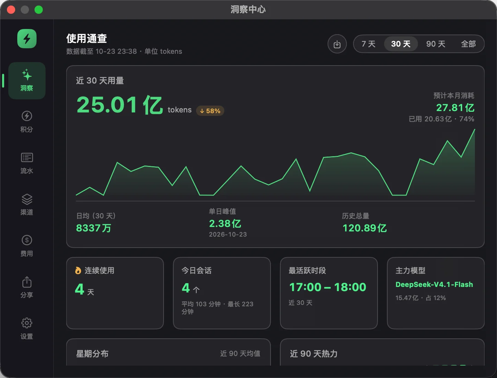
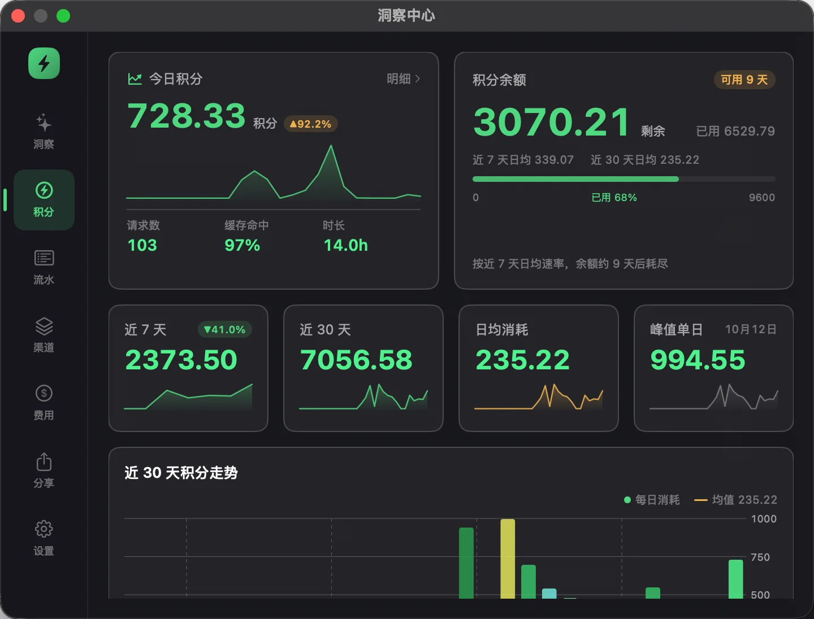

菜单栏实时数字Live in the menu bar
今日 token 总量常驻标题栏，按用量阈值变色。默认每 30 秒刷新，也可自己调。
Today's token total stays in the title bar and changes color with usage. Refreshes every 30 seconds by default.
30s refreshCCBar 实时汇总 Claude Code、Codex、GLM 与 Trae 的 token、积分和费用。数据留在本地，抬眼就能看到今天用了多少。
CCBar brings Claude Code, Codex, GLM and Trae usage together — tokens, credits and cost — in real time. Everything stays on your machine.

从菜单栏的一个数字，到七页洞察中心。所有视图共用同一份本地统计。
From a single number in the menu bar to a seven-page insights center, every view reads from the same local store.
今日 token 总量常驻标题栏，按用量阈值变色。默认每 30 秒刷新，也可自己调。
Today's token total stays in the title bar and changes color with usage. Refreshes every 30 seconds by default.
30s refreshcc-switch、ZCode、Trae 统一口径。每个源都能独立启停、自定义数据库路径。
cc-switch, ZCode and Trae in one place. Enable each source independently and point it at your own database.
cc-switch · ZCode · TraeTrae 积分、7 / 30 / 90 天趋势、余额可用天数，还有月度预算进度。
Trae credits, 7 / 30 / 90-day trends, projected days remaining and a monthly budget line.
Trae credits用量、积分、流水、渠道、费用、分享、设置。热力图、模型编年史和预算都能在这里找到。
Usage, credits, timeline, channels, cost, share and settings — with heatmaps, a model chronicle and budgets.
Insights实时预览带二维码的分享卡，保存或复制一键完成。周报和今日战报都能发。
Preview share cards with a QR code, then save or copy in one click. Weekly and daily battle reports included.
PNG · QR统计库是本地 SQLite，外部源库全程只读。没有云端账号，也不会上传你的用量。
A local SQLite store, source databases opened read-only. No cloud account and no usage upload.
No cloud菜单栏看今日总量，弹窗看当天细节，洞察中心看趋势、模型和积分。同一个本地统计库，三种看法。
Today's total in the menu bar, the day's details in the popover, and trends, models and credits in the insights center — all from the same local store.

日常看弹窗，周末看洞察。需要较真的时候，还有逐笔流水和费用榜。
Check the popover during the day, review insights on the weekend, and dig into the timeline when the numbers matter.


CCBar 不复制源库，也不修改源库。历史每天补账进本地，今日实时读取，再在同一个视图里汇总。
CCBar never copies or modifies your source databases. History is synced locally each day, today is read live, and both meet in one view.
读取 cc-switch 的代理请求日志，按记录里的单价折算费用。Claude、Codex 和其他走代理的应用都能一起统计。
Reads cc-switch proxy request logs and uses the recorded unit price for cost — Claude, Codex and other apps behind the proxy.
对齐 ZCode 官方统计口径：input + output，缓存命中不计入，方便直接和官方界面核对。
Matches ZCode's official accounting: input + output, with cache hits excluded, so numbers line up with the app.
通过官方 HTTP API 拉取会话用量与积分，JWT 自动续签；设置里点「如何获取？」就有 sessionid 的四步取法。
Pulls usage and credits through the official HTTP API with automatic JWT renewal; the in-app “How to get it?” walks you through copying sessionid.
统计库每天自动备份，滚动保留 7 份，也能手动备份。
The local database is backed up daily with seven rolling copies, plus manual backup.
按主键去重，重复导入零新增，换机或多机合并都不重不漏。
Primary-key dedupe makes repeat imports safe, so merging machines never double-counts.
内置配色含 CRT 终端风格，JSON 主题包可导入导出，方便分享。
Six built-in themes, including a CRT terminal look, with importable JSON theme packs.
界面双语，可跟随系统切换。菜单栏、弹窗和洞察中心保持一致。
A bilingual interface that can follow the system, across the bar, popover and insights.
超过阈值或每累计 N 万 token 发系统通知，预算超支也能提前知道。
System notifications for usage thresholds and token milestones, plus budget warnings.
没用量时睡觉，用量越大跑得越快。也可以换回安静的闪电图标。
A pixel cat that naps when idle and runs faster with usage. Switch back to the bolt icon anytime.
免费、无需注册。macOS 下载 DMG 拖进 Applications；Windows 下载单文件 exe 直接运行。
Free and no sign-up. On macOS, drag the DMG into Applications; on Windows, just run the single executable.
当前安装包未做 Apple 公证。首次打开若提示“无法验证开发者”，请右键应用选择“打开”，或在终端执行 xattr -dr com.apple.quarantine /Applications/CCBar.app。
The build is not notarized yet. If macOS blocks the first launch, right-click the app and choose Open, or run xattr -dr com.apple.quarantine /Applications/CCBar.app.
计划在 v1.10.0 提供 ccbar 命令行和本地 Unix socket API，让状态栏工具、脚本和 Raycast 直接读取同一份统计。只读、无网络端口，数字与 UI 完全一致。
Planned for v1.10.0: a ccbar CLI and a local Unix socket API, so status bars, scripts and Raycast can read the same numbers as the app. Read-only, no network port, no second accounting layer.
ccbar stats today --json 输出今日汇总ccbar stats today --json for today's totalsccbar:// 直接打开洞察页ccbar:// links to open insights pagesCLI 与本地 API 尚未随 v1.9.21 发布，以上为规划内容。The CLI and local API are not part of v1.9.21 yet; the items above are planned.
$ ccbar stats today --json
{
"period": "today",
"requests": 103,
"tokens": {
"input": 184000000,
"output": 42000000,
"cache_read": 12000000,
"total": 238000000
},
"credits": 728.33,
"cost_usd": 12.34
}不会。CCBar 的统计库在本地 SQLite，外部数据源只读打开。应用没有云端账号，也不会上传用量、凭证或会话内容。
No. The store is a local SQLite database and source databases are opened read-only. There is no cloud account, and usage, credentials and session content are never uploaded.
当前构建使用 ad-hoc 签名，尚未做 Apple 公证。右键点击 CCBar 选择“打开”，或到“系统设置 → 隐私与安全性”里允许本次打开。之后可正常启动。
The current build is ad-hoc signed and not notarized yet. Right-click CCBar and choose Open, or allow it once in System Settings → Privacy & Security. Subsequent launches work normally.
不会。CCBar 只读取它们的数据库，不会写入、迁移或删除源数据；卸载 CCBar 也不影响原应用。
No. CCBar only reads their databases. It never writes, migrates or deletes source data, and removing CCBar leaves the original apps untouched.
有。可直接下载单文件 ccBar.exe，功能和界面与 macOS 版保持相近。
Yes. Download the single-file ccBar.exe directly; its feature set closely follows the macOS build.
不同平台的口径不一样。CCBar 已按各源官方口径处理：ZCode 不含缓存命中，Trae 的 input 折算为净输入，cc-switch 按记录的单价估算费用。账单还可能包含套餐、折扣或未记录请求。
Providers count differently. CCBar follows each source's own accounting: ZCode excludes cache hits, Trae's input is converted to net input, and cc-switch cost uses recorded prices. Bills may also include plans, discounts or unlogged requests.
本地 CLI 与 JSON API 已进入 v1.10.0 规划，设计目标是只读、无端口、与 UI 同口径。发布后会更新本页。
The local CLI and JSON API are planned for v1.10.0 — read-only, no network port and the same numbers as the UI. This page will be updated when it ships.